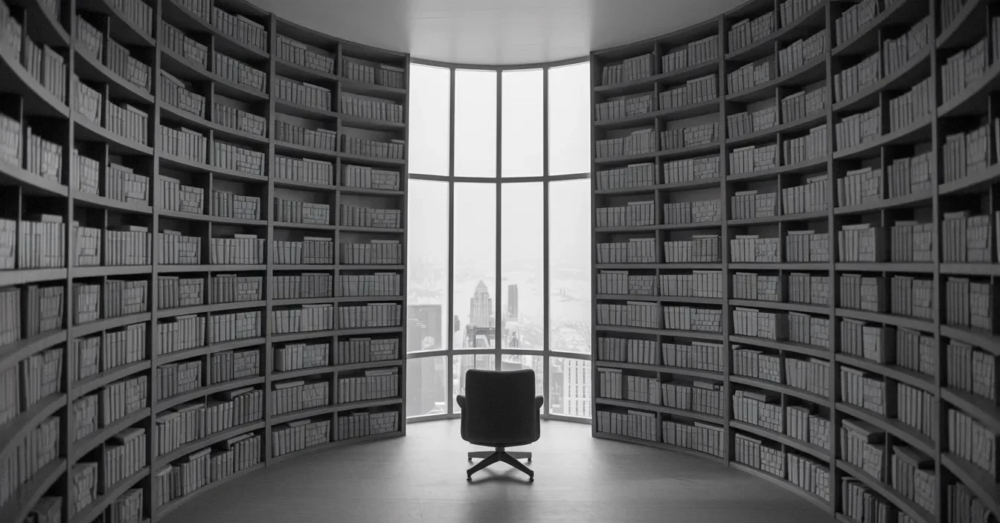

빗소리가 창문을 두드리는 소리에 잠에서 깼다. 그 일정한 리듬이 내 불안감을 반영하는 듯했다. 일어나 앉자 이불이 축축한 수의처럼 피부에 달라붙었다. 낯설고 너무 큰 방의 벽은 모든 것의 색을 빼앗아가는 듯한 새하얀 색으로 칠해져 있었다.
[I awoke to the sound of rain drumming against the window, its steady rhythm mirroring my unease. Sitting up, I felt the bedsheets cling to my skin like a damp shroud. The room, unfamiliar and too large, had walls painted a stark white that seemed to leech the color from everything.]
침대 옆으로 다리를 내리자 맨발이 푹신한 카펫에 빠져들었다. 창문 쪽으로 걸어갔다. 밖에는 안개에 싸인 콘크리트와 강철의 미로가 펼쳐져 있었다. 머릿속이 텅 비어있었다. 어떻게 여기 왔는지, 심지어 ‘여기'가 어디인지도 기억나지 않았다.
[Swinging my legs over the side of the bed, my bare feet sank into the plush carpet. I padded towards the window. Outside, a labyrinth of concrete and steel stretched out before me, shrouded in mist. My mind was blank. I couldn’t remember how I’d gotten here or even where 'here’ was.]
갑자기 문을 두드리는 소리에 깜짝 놀랐다. 한 남자가 그곳에 서 있었는데, 여행의 주름을 무시하는 듯한 완벽하게 재단된 정장을 입고 있었다. “안녕하세요,” 그가 말했다. 그의 목소리는 비단처럼 부드러웠다. “잘 주무셨나요?”
[A sudden knock at the door startled me. A man stood there, dressed in a perfectly tailored suit that defied the wrinkles of travel. “Good morning,” he said, his voice smooth as silk. “I trust you slept well?”]
나는 멍하니 고개를 끄덕였다. 목이 꽉 막힌 듯했다. 그가 방으로 들어서자 그의 존재감이 불안한 기운으로 공간을 채웠다. “당신을 돕기 위해 왔습니다,” 그가 말했다. 그의 얇고 날카로운 미소가 공기를 가르는 듯했다. “당신이 선택되셨습니다.”
[I nodded dumbly, my throat tight. As he stepped into the room, his presence filled the space with an unsettling energy. “I am here to assist you,” he said, his thin, sharp smile cutting through the air. “You have been chosen.”]
“무엇을 위해 선택되었나요?” 그 말이 목에 걸렸다. 그는 내 생각을 읽는 것 같았다. “걱정하실 필요 없습니다,” 그가 말했다. 그의 목소리는 진정시키는 연고 같았다. “모든 것이 준비되어 있습니다.”
[Chosen for what? The words caught in my throat. He seemed to read my thoughts. “There is no need for concern,” he said, his voice a soothing balm. “Everything has been arranged.”]
그가 문쪽으로 손짓하자, 나는 내 의지와는 상관없이 그를 따라가고 있었다. 우리는 긴 빈 복도를 무거운 침묵 속에서 걸었다. 그는 광택 나는 문 앞에서 멈춰 서서 문을 열었고, 빛으로 가득 찬 방이 나타났다.
[With a gesture towards the door, I found myself following, my feet moving of their own accord. We walked down a long, empty corridor in pressing silence. He stopped before a polished door and opened it, revealing a room filled with light.]
나는 안으로 들어서며 갑작스러운 밝음에 눈을 깜빡였다. 원형 방의 벽에는 책으로 가득 찬 선반들이 높이 쌓여 있었다. 방 중앙에는 도시를 내려다보는 큰 창문을 향해 놓인 의자 하나가 있었다.
[I stepped inside, blinking against the sudden brightness. The circular room had walls lined with shelves stacked high with books. A single chair sat in the center, facing a large window overlooking the city.]
“이곳이 당신의 공간입니다,” 그가 말했다. “추후 통보가 있을 때까지 여기에 머무르셔야 합니다.”
[“This is your space,” he said. “You are to remain here until further notice.”]
나는 그에게 돌아서서 질문을 하려 했지만, 그는 이미 사라졌다. 문이 그의 뒤에서 딸깍 하고 닫혔고, 나는 혼자 남겨졌다.
[I turned to him, a question forming on my lips, but he was gone. The door clicked shut behind him, leaving me alone.]
창문으로 걸어가자 유리에 비친 내 모습이 나를 응시하고 있었다. 겉모습은 똑같아 보였지만, 뭔가가 달랐다. 불안감이 나를 덮쳤고, 더 이상 내가 통제권을 갖고 있지 않다는 느낌이 들었다. 나는 이 방, 이 도시, 더 이상 알아볼 수 없는 이 삶 속의 죄수가 되어 있었다.
[Walking towards the window, my reflection stared back at me from the glass. I looked the same, yet something was different. A sense of unease settled over me, a feeling that I was no longer in control. I was a prisoner in this room, this city, this life that I no longer recognized.]
시원한 가죽 의자에 몸을 묻으며, 해독할 수 없는 글자들로 가득한 책을 집어 들었다. 눈을 감자 침묵이 나를 짓눌렀다. 나는 갇혀 있었고, 탈출구는 없었다.
[Sinking into the cool leather chair, I reached for a book filled with indecipherable words. Closing my eyes, the silence pressed down on me. I was trapped, and there was no escape.]